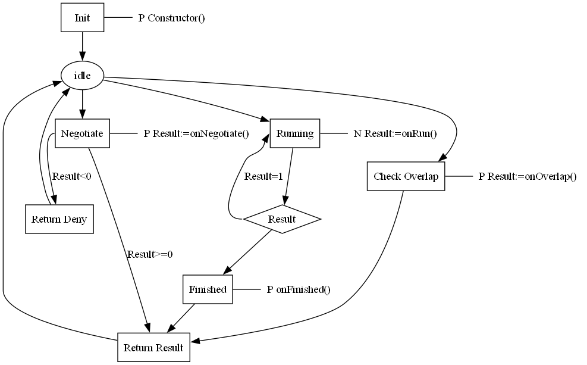

A process plan will be executed according to the following steps:
| State name | Description | Overload |
|---|---|---|
| Init | Constructor is called | optional |
| Negotiate | onNegotiate is called | onNegotiate is optional but if defined it must return an integer based on the Processplan return value |
| Running | onRun is called | onRun must be defined and return an integer |
| Finished | onFinished is called | onFinished is optional |
| Overlap | onOverlap is called | onOverlap is optional |
The function onRun() is a user-defined function that must always exists. The onRun function must be of type integer and the return values from the function must be one of the following:
| Integer value | Predefined constant | Explanation |
|---|---|---|
| 1 | processplan.running | Still running, the onRun() function will be called again at the next cycle |
| 2 | processplan.done | Ongoing activities are done |
| 3 | processplan.failed | Indicates a failure and ongoing running will be aborted |
| 4 | processplan.interrupted | Indicates an interruption |
| 5 | processplan.replan | Indicates that we need to replan. The calling instance must replan the solution |
| 6 | processplan.redo | Indicates that the plan must be executed again without replanning |

In the following example a process plan is created to make two holes. It also demonstrate how to make loop where each iteration must return back the control to the system to avoid time out.
The onNegotiate function is called when another agent requests a negotiation.
It may return –1 to indicate that the process plan is not compatible, or a value ≥ 0 to accept the negotiation.
A value ≥ 0 represents the cost of executing the process plan.
If onNegotiate is not defined, the default behavior is to return the value of the cost property of the process plan.
In the example below, the onNegotiate function checks whether the negotiated locations are reachable.
If both locations are reachable, it returns 1 to accept; otherwise, it returns –1 to refuse. Note, for a skill there are no reference variables for agent and interface.
onRun must implement and represents the main action of a process plan. onRun must return an integer based on the Processplan return value.
onFinished is called when the process plan is done. It is optional and can be used for e.g., cleanup.
onOverlap is called to check for overlaps. onOverlap is a boolean function and optional. If it returns true the overlapping interface is booked to prevent dangerous situations.